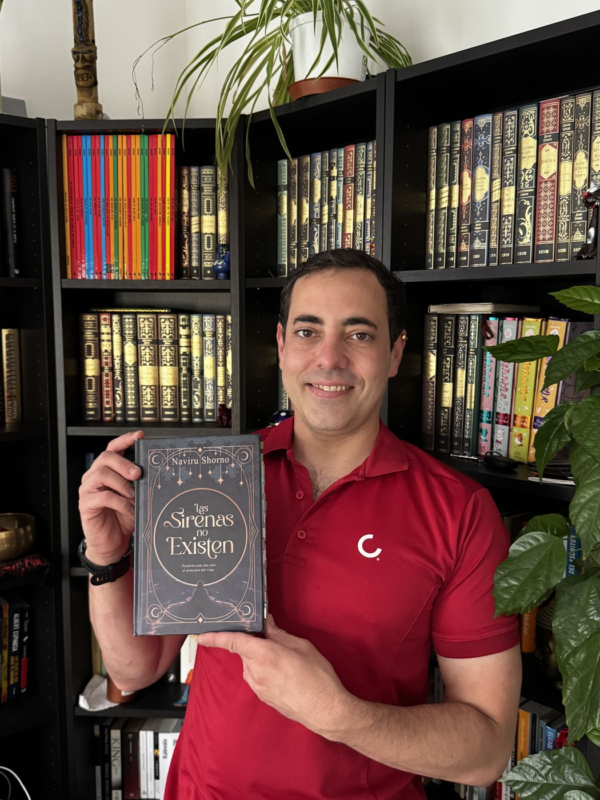

Novela contemporánea
Las Sirenas no Existen
Naviru Shorno
Perderlo todo fue solo el principio del viaje.
Ya disponible
Perderlo todo fue solo el principio del viaje.
No he sido la mejor madre del mundo, lo sé. No hace falta que me lo recuerdes; ya me lo repito yo cada mañana. Pero, aunque te haya fallado tropecientas veces, quiero que sepas que lo intenté hacer lo mejor que pude. Y no, cuando naciste no viniste con manual de instrucciones, así que he ido aprendiendo sobre la marcha. ¡Puñetas!
Hace demasiado tiempo que no hablamos, y por eso te envío este cuaderno. En él te cuento cómo ha sido mi vida en el último año. No esperes una historia perfecta, porque no soy novelista… y menos mal, porque si viviera de escribir, me habría muerto de hambre hace mucho.
Tú has sido mi único motor en la vida, la razón por la que sigo aquí. Y pase lo que pase, quiero que lo sepas: te quiero con todo mi corazón imperfecto.
Tu madre.
Pd: No sé si contarte todos mis secretos y mis momentos más vergonzosos servirá para que me perdones, pero lo voy a intentar de todos modos. El no ya lo tengo.
«Es una suerte no saber qué día nos cambiará la vida para siempre. A mí me cambió la vida el día que conocí a Marciana.»
¿Quieres tu ejemplar firmado por el autor? Escríbele por sus redes y lo hablas directamente con él.
Ver sus redesLa novela se sostiene sobre un encuentro improbable: la mujer que ya no espera nada y la que cree que el universo conspira a su favor.
Camarera desde antes de ser madre, capricornio, nada impulsiva y experta en tortilla de patatas. Sale de casa con una sonrisa que no siente y solo entiende las cosas cuando las pone por escrito. Por eso le escribe a Eric.
Pelirroja, rechoncha, vestido de flores y un bolso que parece un caldero. Calienta su agua de luna al fuego, nunca en el microondas. Ha vendido su casa, dejó su trabajo y ahora se dedica a vivir. El número 222 la persigue.
El autor deja leer el capítulo I completo: la noche en que María Antonia conoció a Marciana. Empieza por aquí y decide con conocimiento de causa.

NNaviru Shorno (Barcelona) es escritor y reside actualmente en Finlandia. Autor de varias novelas con una voz propia, sus historias mezclan intriga y misterio con acción, humor y romance.
Empezó a escribir a los nueve años y desde entonces ha convertido la creación de historias en una pasión constante. Actualmente compagina la literatura con su trabajo como cocinero, con el objetivo de dedicarse algún día por completo a la escritura.
Una edición cuidada, con ese marco dorado que da ganas de tenerla en la mano.
La novela completa, para empezarla esta misma noche y acompañar a María Antonia todo el año que le queda por contar.
Ir a Amazon Edición KindleLee el capítulo I completo aquí mismo, sin registrarte en nada y sin dejar tu correo en ningún sitio.
Leer el capítulo I Adelanto gratuitoNaviru cuenta por aquí en qué anda escribiendo. Si quieres el libro dedicado, este es el sitio para pedírselo.